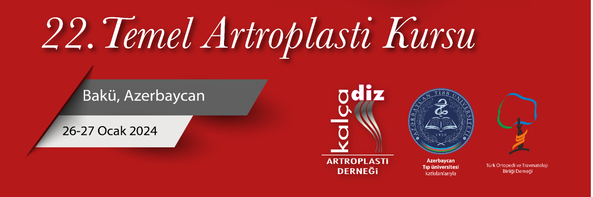

Değerli Meslektaşlarımız,
Kalça Diz Artroplasti Derneği olarak, Azerbaycan Tıp Üniversitesi Ortopedi ve Travmatoloji Anabilim dalının katkılarıyla 26-27 Ocak 2024 tarihinde Baku Marriott Hotel Boulevard'de 22. Temel Artroplasti Kursunu gerçekleştireceğiz. Özellikle kalça,diz artroplastisi konusunda eğitim almak isteyen genç meslektaşlarımıza ve bilgi güncellemek isteyen uzman ortopedistlere yönelik temel kursta, teorik bilgilerin yanısıra kuru kemikler üzerinde pratik uygulamalar ile bilgi ve becerilerin güncellenmesi amaçlanmaktadır. Artroplasti konusunda deneyimli eğiticiler ile gerek yuvarlak masa oturumları, gerekse vaka bazlı sunumlarda pratik ve teorik tartışma olanağı sağlanılmış olacaktır.
İki gün sürecek olan kursumuzda; güncellenmiş, interaktif bir program ile sizleri, Azerbaycanlı ve Türk meslektaşlarımızı, aramızda görmekten mutlu olacağız
Bakünün en güzel köşelerinden Baku Marriott Hotel Boulevard'de gerçekleştirilecek 22. Temel Artroplasti Kursunda buluşmak üzere saygı sevgilerimizle.
Kurs Eş Başkanları:
Prof. Dr. Eldar Abbasov
Prof. Dr. Emre Toğrul (Dernek Başkanı)
T.e.d.Dr. Ilgar Qasımov ( Azerbaycan Sağlık Bakan Yardımcısı)
***Hörmətli Kolleqalar,
Galça-Diz Artroplastika Assosiasiyası ve Azərbaycan Tibb Üniversiteti Travmatologiya və Ortopediya kafedrası olaraq, 26-27 yanvar 2024 tarixlərində Baku Marriott Hotel Boulevard 22-ci Təməl Artroplastika Kursunu keçirməyi planlayırıq. Bu kurs, xüsusən Bud-çanaq və Diz oynaqları artroplastikası üzrə təlim almaq istəyən gənc kolleqalar və biliklərini yeniləmək istəyən mütəxəssis ortoped-travmatoloqlar üçün nəzəri biliklərlə yanaşı, maket sümüklər üzərində praktik tətbiqlərlə bilik və bacarıqlarını yeniləmək məqsədi daşıyır. Kursiyerlərə artroplastika üzrə təcrübəli mütəxəsislərin tövhələri ilə həm dəyirmi stol arxasında, həm də təqdimatlarda praktiki və nəzəri müzakirə imkanları yaradılacaqdır.
İki günlük kursumuzda; Sizi, Azərbaycan və Türk həkim kolleqaları, yenilənmiş, interaktiv proqramda görməkdən şad olarıq.
Sizi Bakı şəhərinin ən gözəl guşələrindən biri olan Baku Marriott Hotel Boulevard keçiriləcək 22-ci Təməl Artroplastika Kursunda gözləyirik.
Qeydiyyatdan keçmək üçün klikləyin,
*Kursun həmsədrləri:
Prof. Dr. Eldar Abbasov
Prof. Dr. Emre Toğrul
(Dərnək sədri)
T.e.d.Dr. Ilgar Qasımov
***Dear Colleagues,
In collaboration with the Department of Orthopedics and Traumatology at Azerbaijan Medical University, we are pleased to announce the 22nd Basic Arthroplasty Course, to be held on January 26-27, 2024, in Baku Marriott Hotel Boulevard. This basic course is specifically designed for young colleagues interested in receiving training in hip and knee arthroplasty and experienced orthopedic specialists looking to update their knowledge and skills. The course aims to provide practical applications on dry bones alongside theoretical knowledge. Experienced instructors in arthroplasty will lead practical and theoretical discussions through roundtable sessions and case-based presentations.
During our two-day course, we look forward to meeting you and our Azerbaijani colleagues in a program that is both updated and interactive.
We will be delighted to have you join us at the 22nd Basic Arthroplasty Course, to be held at the beautiful Baku Marriott Hotel Boulevard in the heart of Baku.
For registration, please click
Course Co-Chairs:
Prof. Dr. Eldar Abbasov
Prof. Dr. Emre Toğrul (Association President)
T.e.d.Dr. Ilgar Qasımov
